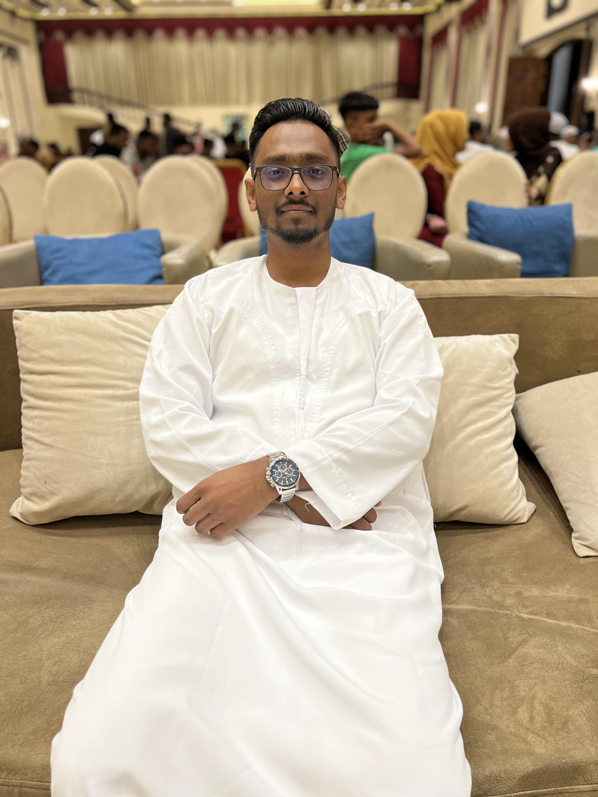

Rashedul Islam Rashel
Certified Full Stack Web Developer
PROFESSIONAL SUMMARY
Creative task-driven individual with over 5 years of experience in web design and development.
Equipped with knowledge in HTML, CSS, JavaScript, Java and other programming languages apart from experience in team management and project management.
Proficient in testing Ul/UxI interface designing. markel research and troubleshooting complex
TECHNICAL SKILLS
- HTML
- CSS
- JAVA
- JAVASCRIPTS
- WORDPRESS
- PHP
- PYTHON
- SQL
- UI/UX
- .NET
EXPERINCE
Web Developer
Web River Foundation
September 2022 - Present
- Designing and developing user mercy weosites Dasts chent redurement clicks and 237 in purchases
- Managed a team of 10+ members for a Website Design project worth USt 50,000
- Administered end-to-end software development lifecycle for 15 client projects with lour on time delvery and within budgets
- Created a dynamic website for an international organization that assured more page views, and User Experience, resulting in a 25% increase in sales revenue.
- Coordinated with the design team to optimise UI/UX for 32 projects which resulted in an average decrease of bounce rate by 13%
- Designed and developed 13 static websites and 28 dynamic user-friendly websites basis client requirements.
- Attended and completed 5 training sessions on Web Development
- Fixed bugs on client websites and implemented enhancements to improve Speed and tunctionalty
- Revamped security applications for a client website, minimizing hacker attacks from 1.3% to 0.09%
EDUCATION
- POST GRADUATE PROGRAM IN USER EXPERIENCE DESIGN
Great Learning, IIT Dhaka, Bangladesh, 2021.
- BACHELORS OF ENGINEERING IN COMPUTER SCIENCE
KLE Technological University, Bangladesh, 2016
- CLASS XII - SCIENCE Great Learning College, Bangladesh, 2012
CERTIFICATIONS
- INTRODUCTION TO WEB DEVELOPMENT University of California Davis, 2021
- GOOGLE UX DESIGN PROFESSIONAL CERTIFICATE Google, 2020
Interested to work with us? Drop us a line
Bangladesh Office
344 STREET, NEW ESKATON TOWER
GULSHAN 1, DHAKA, BANGLADESH
© Coding with Rashel